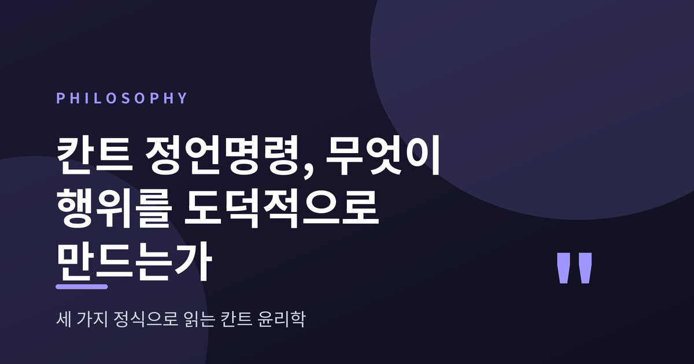
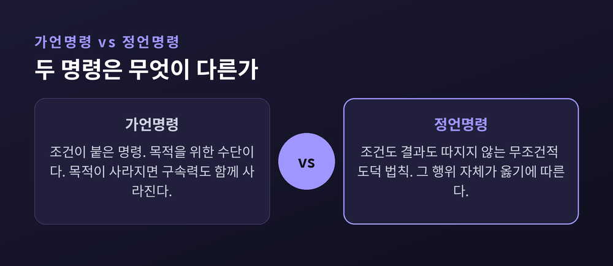
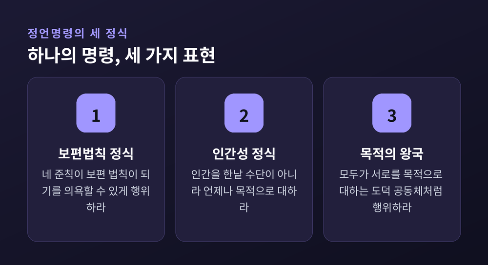
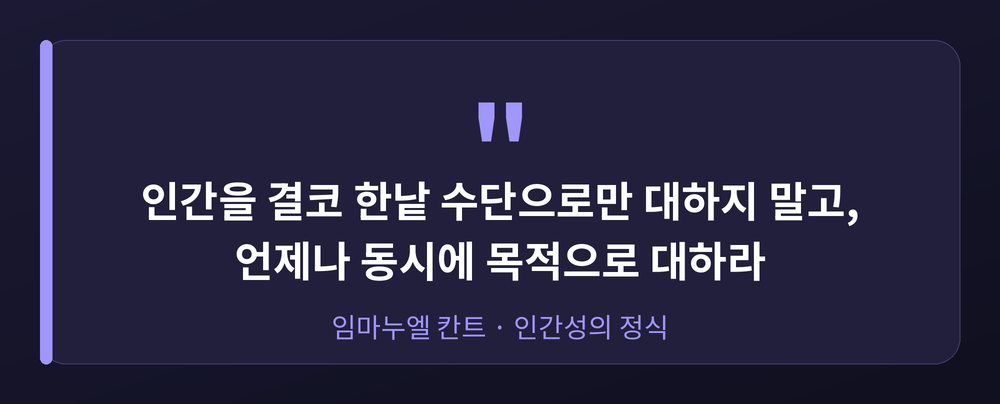
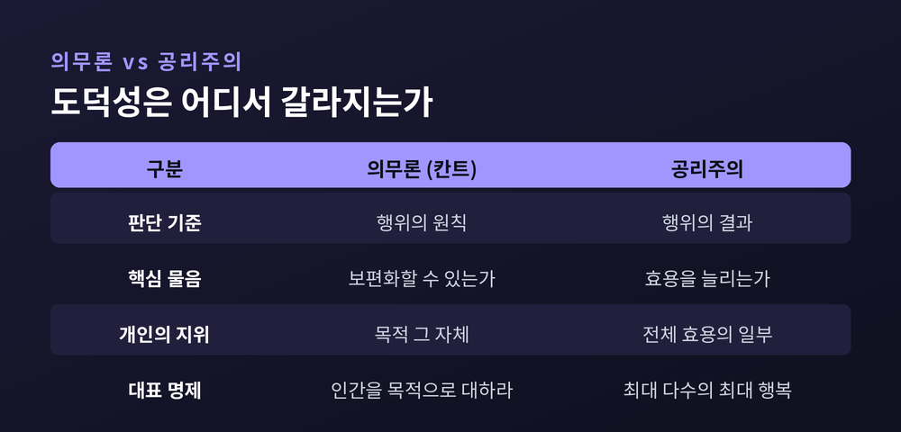
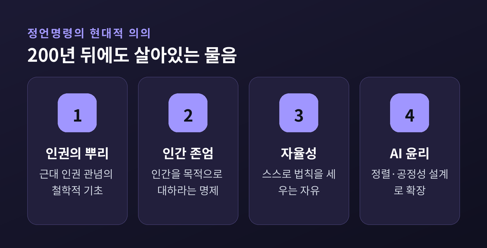

칸트 정언명령, 무엇이 행위를 도덕적으로 만드는가

이번 글에서는 칸트의 정언명령을 정리해 보겠습니다. 결론부터 말씀드립니다. 칸트에게 행위를 도덕적으로 만드는 것은 좋은 결과가 아니라, 그 행위가 따르는 원칙입니다. 왜 그런지, 세 가지 정식과 대표 사례를 따라가며 짚어보겠습니다.
정언명령과 가언명령은 무엇이 다른가
먼저 두 종류의 명령을 구분해야 합니다.
가언명령은 조건이 붙은 명령입니다. "건강해지고 싶다면 운동하라." 목적이 사라지면 명령도 힘을 잃습니다. 수단으로서의 명령인 셈입니다.
정언명령은 다릅니다. 조건도 결과도 따지지 않습니다. 그저 "그렇게 하라"고 명령합니다. 그 행위 자체가 옳기 때문입니다.
칸트가 보기에 진짜 도덕 법칙은 정언명령입니다. 도덕은 무언가를 얻기 위한 도구가 아니라, 그 자체로 지켜야 하는 것이기 때문입니다. 그는 이 원리를 중세적 신의 권위에서도, 인간의 그때그때 사정에서도 떼어냈습니다. 도덕은 이성이 스스로에게 부과하는 무조건적 명령이라는 것입니다.

세 가지 정식으로 읽는 정언명령
칸트는 하나의 정언명령을 여러 방식으로 표현했습니다. 대표적인 세 정식을 봅니다.
첫째, 보편법칙의 정식입니다. "그대의 준칙이 동시에 보편적 법칙이 되기를 의욕할 수 있는, 오직 그런 준칙에 따라 행위하라." 준칙이란 내가 행위할 때 따르는 나만의 규칙을 말합니다. 이 규칙을 모두가 따라도 세상이 모순 없이 굴러가는가. 그렇지 않다면 그 행동은 허용되지 않습니다.
둘째, 인간성의 정식입니다. "인간을 결코 한낱 수단으로만 대하지 말고, 언제나 동시에 목적으로 대하라." 착취와 조작, 강요와 기만을 금합니다. 결과가 나빠서가 아닙니다. 그것이 사람을 이성적 존재로 존중하지 않기 때문입니다. 여기서 중요한 말은 '한낱'입니다. 누군가를 수단으로 쓰는 것 자체가 문제는 아닙니다. 상대를 오직 도구로만 취급하는 것이 문제입니다.
셋째, 목적의 왕국의 정식입니다. 모두가 서로를 목적으로 대하며, 스스로 도덕 법칙을 세우는 이상적 공동체를 그립니다. 칸트는 이를 "공통의 법칙 아래 있는 이성적 존재들의 체계적 결합"이라 불렀습니다. 앞의 두 정식을 하나로 합친 그림이라 이해하시면 됩니다.

정리하면, 도덕적 행위는 세 가지를 동시에 만족해야 합니다. 누구나 따를 수 있는 원칙이어야 하고, 모든 사람의 존엄을 존중해야 하며, 함께 사는 도덕 공동체에 기여해야 합니다.
보편화 시험은 실제로 어떻게 작동하는가
말이 추상적으로 들릴 수 있으니, 칸트가 든 예로 보겠습니다.
돈이 급한 사람이 갚을 생각 없이 거짓 약속을 하고 돈을 빌린다고 합시다. 이 준칙을 보편 법칙으로 삼아 모두가 따른다고 상상해 봅니다. 그러면 아무도 약속을 믿지 않게 되고, 약속이라는 제도 자체가 사라집니다. 거짓 약속을 하려는 순간, 그 약속이 성립할 토대를 스스로 무너뜨리는 셈입니다. 보편화하면 개념적 모순이 생기는 것입니다.
칸트는 의무를 둘로 나눴습니다. 완전한 의무는 예외 없이 지켜야 합니다. 거짓 약속 금지가 그렇습니다. 불완전한 의무는 어느 정도 재량이 있습니다. 어려운 이웃을 도우라, 자신의 재능을 계발하라 같은 것이 여기 속합니다. 하지 않으면 모순까지는 아니어도, 그런 세상을 우리가 진심으로 바랄 수는 없다는 것입니다.
도덕성은 결과가 아니라 선의지에 있다
칸트 윤리의 출발점은 선의지입니다.
그는 이렇게 말합니다. 이 세계 안에서 무조건 선하다고 부를 수 있는 것은 오직 선의지뿐이라고. 지성도 용기도 재물도 그 자체로는 선하지 않습니다. 쓰기에 따라 선과 악으로 갈립니다.
여기서 핵심 개념이 나옵니다. 바로 '의무로부터'의 행위입니다.
같은 행동이라도 이익이나 동정심 때문에 한 것과, 그것이 옳기 때문에 한 것은 도덕적 가치가 다릅니다. 도덕적 가치는 눈에 보이는 결과가 아니라, 그 뒤에 놓인 원칙에 대한 존중에 있습니다.
오해하기 쉬운 대목이 있습니다. 칸트는 동정심이나 선한 감정을 나쁘다고 말하지 않았습니다. 다만 그런 감정에만 기대는 도덕은 흔들리기 쉽다고 보았습니다. 기분이 좋을 때만 착해지는 것은 도덕이라 부르기 어렵습니다. 감정이 식은 날에도 옳은 일을 붙드는 힘, 그것을 칸트는 의무에 대한 존중이라 불렀습니다.

한 가지 덧붙이면, 칸트는 자율성을 중시했습니다. 자율은 스스로 법칙을 세우는 것입니다. 욕구에 끌려다니는 타율과 반대입니다. 칸트에게 자유란 하고 싶은 대로 하는 것이 아니라, 이성이 세운 법칙에 스스로 따르는 것이었습니다. 그래서 그에게 도덕과 자유는 서로 등을 맞댄 한 몸입니다.
의무론과 공리주의, 어디서 갈라지는가
칸트의 입장을 의무론이라 부릅니다. 결과주의와의 대비 속에서 성격이 또렷해집니다.
예전의 익숙한 사고는 결과 계산이었습니다. 가장 많은 사람에게 이익이 되면 옳다는 공리주의가 그렇습니다. 지금 칸트가 던지는 물음은 방향이 다릅니다. 결과가 아무리 좋아도, 그 과정에서 한 사람을 수단으로 희생시켜도 되는가.
공리주의는 총합을 계산합니다. 다수의 행복을 위해서라면 소수의 희생도 저울에 올립니다. 칸트는 그 계산 자체를 거부합니다. 한 사람을 다수의 행복을 위한 도구로 쓰는 순간, 그 사람의 인간성이 짓밟히기 때문입니다. 도덕의 무게는 결과가 아니라 원칙에 실려 있습니다.

거짓말은 어떤 경우에도 안 되는가
정언명령을 이야기할 때 빠지지 않는 논쟁이 있습니다. 거짓말 문제입니다.
문제는 극단적 상황에서 불거집니다. 뱅자맹 콩스탕은 이렇게 되물었습니다. 친구를 죽이려는 살인자가 "그가 집에 있느냐"고 물으면, 진실을 말해야 하는가.
칸트의 답은 단호했습니다. 그래도 거짓말은 안 된다. 진실성은 특정한 한 사람이 아니라 인류 전체에 대한 의무이기 때문입니다.
여기서 비판이 갈립니다. 지나치게 경직됐다는 지적, 결과를 너무 무시한다는 지적이 오래 이어졌습니다. 보편화라는 형식만으로 실제 의무의 내용을 다 채울 수 있느냐는 물음도 있습니다. 저 역시 이 대목은 선뜻 동의하기 어렵습니다.
다만 한 가지는 분명합니다. "인간을 목적으로 대하라"는 명제는 오늘날 인권과 인간 존엄 사상의 뿌리가 되었습니다. 최근에는 인공지능을 어떻게 정렬시킬지, 공정성을 어떻게 설계할지 논의하는 자리에서도 칸트의 의무론이 다시 불려 나옵니다. 완벽한 이론은 아닙니다. 그러나 남긴 유산은 묵직합니다.

끝으로 한 마디만 더 드리겠습니다.
200여 년 전의 이론이지만, 그 물음은 지금도 낡지 않았습니다. 우리는 매일 크고 작은 선택 앞에 섭니다. 그때마다 결과의 유불리를 먼저 따지곤 합니다. 칸트는 그 순서를 뒤집어 보라고 권합니다.
칸트의 물음은 결국 하나로 모입니다. "무엇을 얻는가"가 아니라 "어떤 원칙 위에 서는가."
좋은 결과 앞에서 원칙을 접고 싶을 때, 그 질문은 조용히 우리를 붙잡습니다. 당신의 행동이 온 세상의 법칙이 되어도 괜찮겠냐고 물으신다면, 오늘 나는 무어라 답할 수 있을까요.